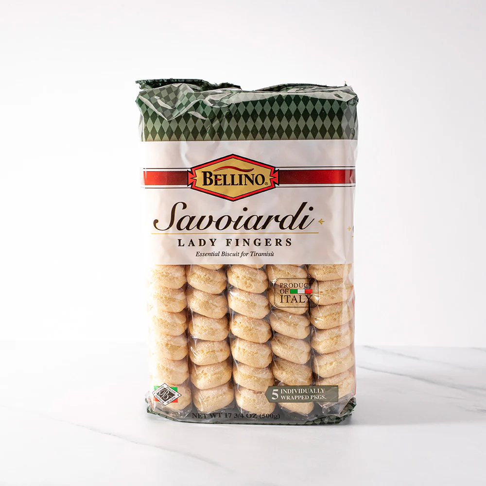

What is Tiramisu?
Tiramisu is a timeless no-bake Italian dessert combining espresso-dipped ladyfingers and a lightly sweetened mascarpone cream.
It's always been my favorite cake—ever since I was ten, I've eaten it for my birthday!
Ingredients
-
1 ½ cups heavy whipping cream -
8 ounce container mascarpone cheese, room temperature -
1/3 cup granulated sugar -
1 teaspoon vanilla extract -

1 1/2 cups cold espresso, prepared -
3 Tablespoons coffee flavored liqueur, optional (Kahlua or DaVinci brands) -

1 package Lady Fingers, Savoiardi brand -
Cocoa powder for dusting the top
Equipment
-
8x8 Dish -
Hand Mixer
Instructions

- Add whipping cream to a mixing bowl and beat on medium speed with electric mixers (or use a stand mixer). Slowly add sugar and vanilla and continue to beat until stiff peaks. Add mascarpone cheese and fold in until combined. Set aside.
- Add coffee and liqueur to a shallow bowl. Dip the lady fingers in the coffee (Don't soak them--just quickly dip them on both sides to get them wet) and lay them in a single layer on the bottom of an 8x8'' or similar size pan.
- Smooth half of the mascarpone mixture over the top. Add another layer of dipped lady fingers. Smooth remaining mascarpone cream over the top.
- Dust cocoa powder generously over the top (I use a fine mesh strainer to do this). Refrigerate for at least 3-4 hours or up to overnight before serving.
Nutrition Facts
9 servings | Serving Size: 1 Slice | Nut & Egg Free
- Calories: 297kcal
- Carbohydrates: 26g
- Protein: 5g
- Fat: 18g
- Saturated Fat: 11g
- Polyunsaturated Fat: 1g
- Monounsaturated Fat: 2g
- Cholesterol: 88mg
- Sodium: 77mg
- Potassium: 124mg
- Fiber: 1g
- Sugar: 11g
- Vitamin A: 618IU
- Vitamin C: 1mg
- Calcium: 90mg
- Iron: 1mg